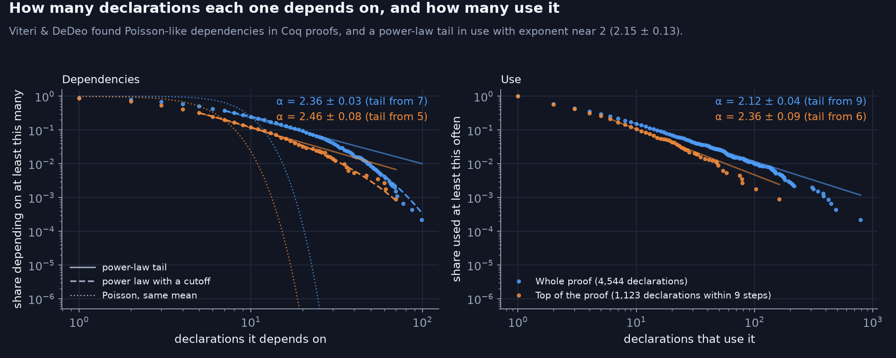
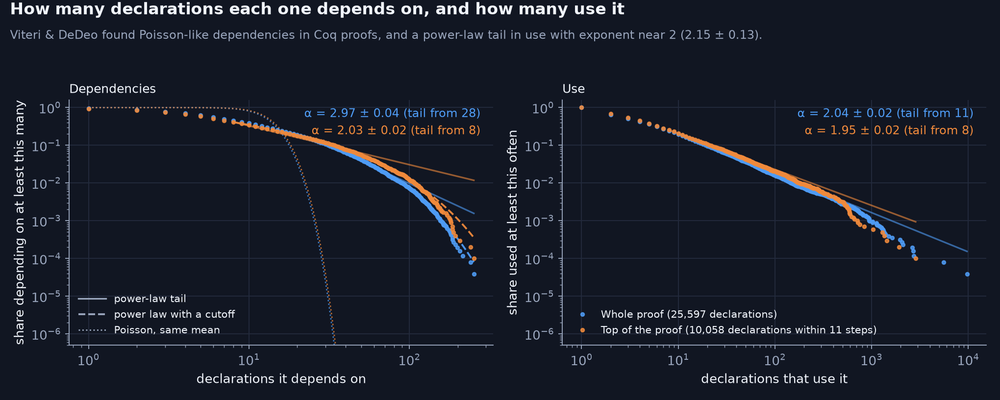
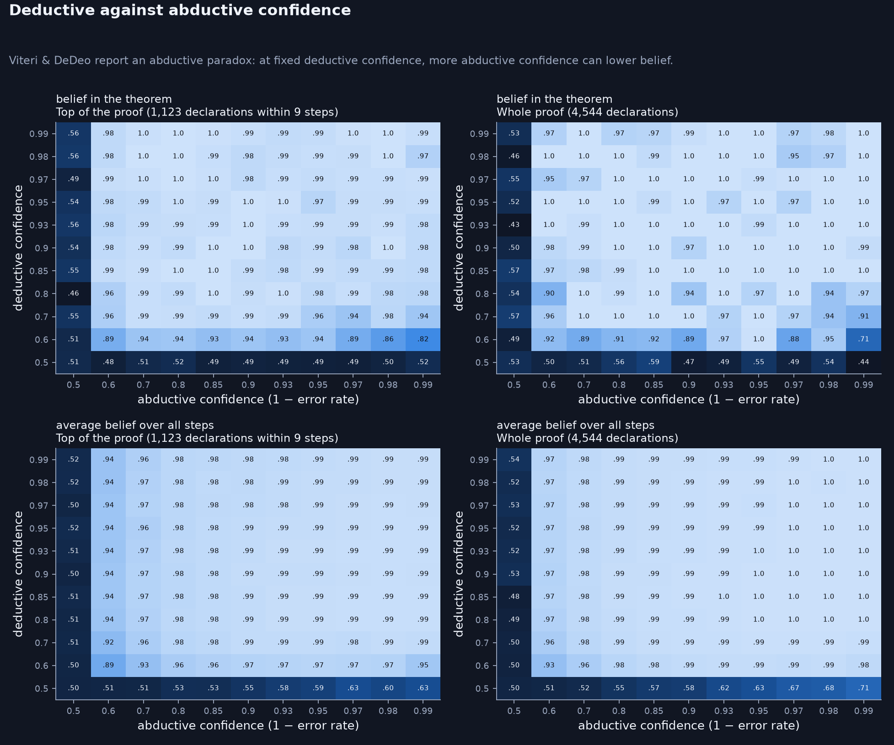
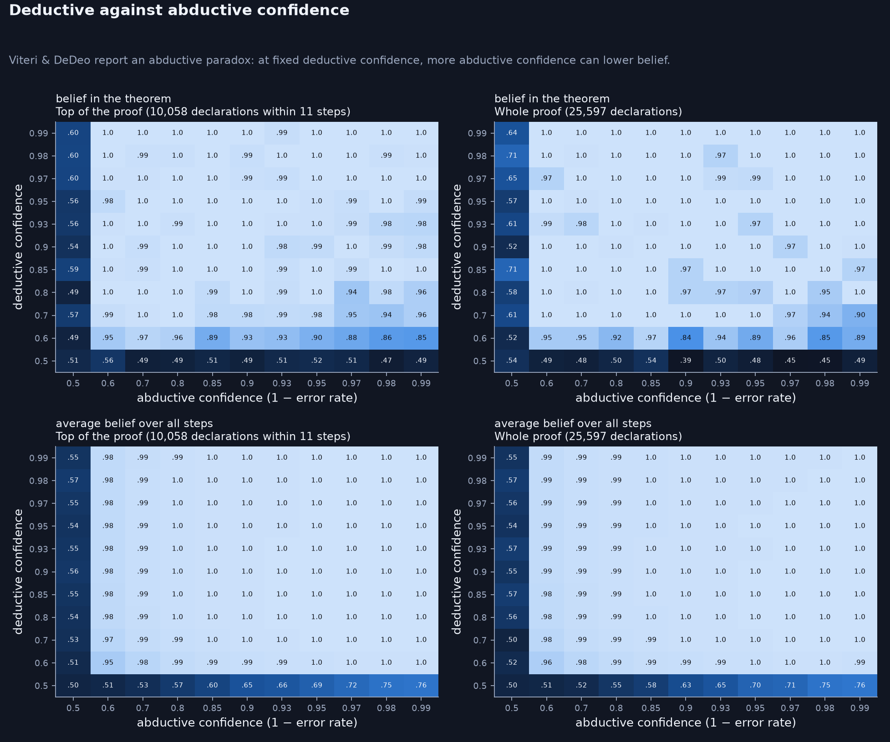
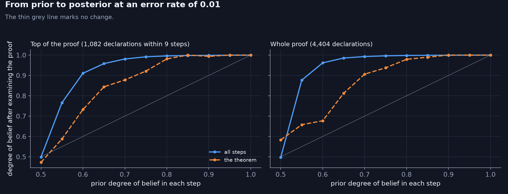
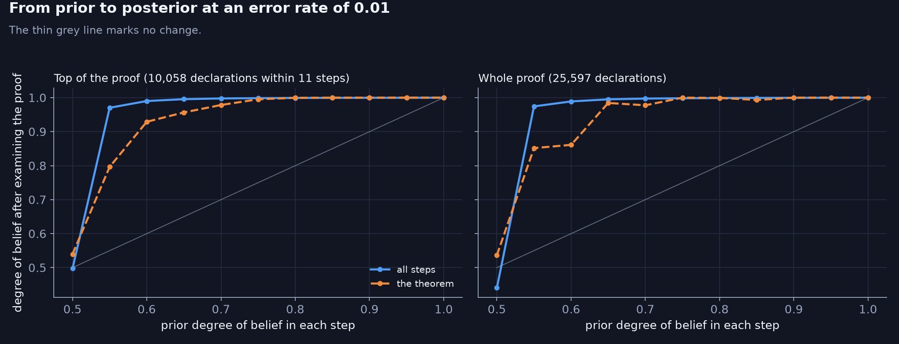

Dependency graphs: Anthropic vs. OpenAI’s VP ≠ VNP Proofs
Side-by-side structural analysis of two independent AI-generated Lean 4 proofs of Valiant’s conjecture (VP ≠ VNP):
Anthropic (anthropics/formal-math/vp-vnp;
paper.pdf) and
OpenAI (openai/math, problem #379).
Both graphs are extracted directly from the compiled .olean files on our
comparative oleans & verification page.
For a strictly apples-to-apples comparison, both graphs on this page are restricted to the transitive dependency closure of each project’s single headline VP ≠ VNP theorem: Solution.separation for Anthropic (4,404 declarations and 33,894 internal links across 307 files; excluding border-complexity/real-permanent-only additions and unused scaffolding) and OAI.Computability.VPVNP.Standalone.vp_ne_vnp for OpenAI #379 (25,597 declarations and 323,958 internal links across 3,008 files; excluding corollary12-only additions, notation macros, and unused scaffolding). Below: the two proofs side by side as networks, their dependence and reuse statistics, dual independent declaration navigators, depth profiles, and browsable source maps.
Both proofs follow the same surprising hybrid strategy—combining an algebraic/geometric obstruction from crossing gadgets and spectral tensor curvature with a diagonalizing universal-machine simulation—which is why their Louvain networks align cleanly at the geometric core (A#11 ↔ O#12 crossing gadgets; A#5, A#7, A#4, A#8 ↔ O#10, O#14 spectral tensors, Grassmann/flag actions, and CAT(0) curvature; A#9, A#10 ↔ O#9, O#17 polynomial/circuit encodings), even though OpenAI’s discrete simulation stack makes its proof nearly six times larger.
Made possible by the support of Grant 63750, “Explaining Universal Truths”, from the John Templeton Foundation, Project Lead Simon DeDeo. Additional support from research funds of the Laboratory for Social Minds and from the Survival and Flourishing Fund.
The proofs as networks
Both graphs laid out by the exact same procedure: Louvain clustering on the declaration links alone (no knowledge of files or folders), with each module laid out individually and arranged by inter-module linkage. Hover over any numbered cluster to inspect it; click a cluster to lock its details and jump from its most-used declarations straight into that proof’s navigator below.
Solution.separation

Solution.separation. Full 6000×4000 poster with key (4.0 MiB).
Standalone.vp_ne_vnp

Standalone.vp_ne_vnp. Full 6000×4000 poster with key (8.3 MiB).
Both exact VP ≠ VNP closures partition into 18 Louvain clusters with zero outer-ring nodes, yet their internal architectures differ markedly.
Anthropic’s 4,404-declaration proof separates cleanly (modularity 0.78, mean 7.7 dependencies), whereas OpenAI’s 5.8× larger 25,597-declaration proof is denser (mean 12.7 dependencies) and more cross-coupled across clusters (modularity 0.64).
All declarations not transitively used by each proof’s final VP ≠ VNP theorem (248 in Anthropic, mostly border-complexity additions; 13,382 in OpenAI, including 5,116 parser notation macros, corollary12-only lemmas, and unused helpers) are excluded from every figure and navigator on this page. Module names on both sides are a reader’s labels derived from each cluster’s most-used declarations and distinctive name-words.
At a glance
| Metric | Anthropic (vp-vnp) | OpenAI (openai/math #379) |
|---|---|---|
| Headline VP ≠ VNP theorem | Solution.separation (exact VP ⊂ VNP over every field; repo also proves border VP bounds) | OAI.Computability.VPVNP.Standalone.vp_ne_vnp (exact IsVP ≠ IsVNP over every field; border bound in paper only) |
| Lean & dependencies | Lean v4.33.1 + Mathlib v4.33.1 only | Lean v4.34.1 + Mathlib v4.34.1 + patched lemmata, cslib, complexitylib |
| Modules used (of compiled) | 307 of 322 modules (72,932 repo lines) | 3,008 of 3,189 modules (440,234 repo lines) |
| Declarations in VP ≠ VNP closure | 4,404 of 4,652 compiled (94.7%) | 25,597 of 38,979 compiled (65.7%) |
| Internal links (in closure) | 33,894 · mean 7.70 deps (max 99) | 323,958 · mean 12.66 deps (max 252) |
| Louvain modules & modularity | 18 modules (11 ≥ 100) · Q = 0.781 | 18 modules (13 ≥ 100) · Q = 0.641 |
| Depth below VP ≠ VNP (peak / max) | Peak 553 at step 13 · max 22 steps | Peak 2,432 at step 12 · max 31 steps |
| Use / dep exponent (xmin = 10 MLE) | Use 2.13 ± 0.04 · Dep 2.61 ± 0.05 | Use 2.03 ± 0.01 · Dep 2.23 ± 0.01 |
| 200-core build / replay time | 180s build · 30s replay (0 errors) | 800s build · 300s replay (0 errors) |
Dependence and use
Following Viteri & DeDeo (Cognition, 2022), we count how many earlier claims each declaration depends on and how many later claims use it, on both the full single-theorem closure and a depth-truncated top network (first depth past 1,000 nodes for Anthropic: 1,082 nodes at depth 9; first depth past 10,000 nodes for OpenAI: 10,058 nodes at depth 11).


Both proofs show heavy-tailed reuse close to Viteri & DeDeo’s Coq tinkering-and-reuse exponent (2.15 ± 0.13). At a common cutoff (xmin = 10, exact unbounded discrete MLE), Anthropic’s reuse exponent is 2.13 ± 0.04 and OpenAI’s is 2.03 ± 0.01 (compare RH at 1.92–2.05).
Dependence is heavy-tailed with a downward bend in both, and its slope tracks proof scale rather than an AI-vs-human divide. Anthropic averages 7.70 dependencies per declaration (max 99) while OpenAI averages 12.66 (max 252). At xmin = 10, Anthropic’s dependence exponent (2.61 ± 0.05) sits right on size-matched human Mathlib v4.33.1 theorem closures (median 2.63 at 3k–7k nodes), whereas the 5.8× larger OpenAI proof (2.23 ± 0.01; 2.67 at xmin = 20) sits right on larger human Mathlib closures (median 2.27 at 14k–35k nodes; 2.86 at xmin = 20) and the RH top (2.41). Across all three AI proofs and human Mathlib, apparent exponent tensions vanish once cutoffs and graph boundaries are matched (DeDeo, 2026).
Belief dynamics (deduction vs. abduction and prior sensitivity) for both proofs
Unlike the Riemann Hypothesis graph—whose final theorem sits atop a thin 1-1-2-3 chain and shows a sharp abductive drop—both exact VP ≠ VNP theorems sit on wide immediate foundations (Anthropic: 1, 10, 9, 24, 43 declarations in the first five levels; OpenAI: 1, 9, 15, 24, 74). At error rate 0.01 and prior 0.60, whole-proof belief across all steps already reaches 0.962 in Anthropic (0.677 for the theorem, rising to 0.996 all / 0.938 theorem at prior 0.75) and 0.989 all / 0.861 theorem in OpenAI.




Comparing the two proof strategies
Both proofs follow the same surprising hybrid strategy—combining an algebraic/geometric obstruction from crossing gadgets and spectral tensor curvature with a diagonalizing universal-machine simulation—which is why their Louvain networks align cleanly at the geometric core (A#11 ↔ O#12 crossing gadgets; A#5, A#7, A#4, A#8 ↔ O#10, O#14 spectral tensors, Grassmann/flag actions, and CAT(0) curvature; A#9, A#10 ↔ O#9, O#17 polynomial/circuit encodings).
In Anthropic’s network (4,404 declarations, Q = 0.78), nearly a third of the graph is a cleanly modular geometric engine (A#4, A#5, A#7, A#8) that plays convex price functions and SL(2)/flag-variety duality against a compact tree-program, plan-system, and tower-routing compiler (A#1–A#3, A#6, A#13), yielding an explicit mc(log2 m)1/3 lower bound that carries directly to border complexity and to Hamiltonian cycle/permanent grids (A#9, A#16).
In OpenAI’s network (25,597 declarations, Q = 0.64), that same geometric and crossing-gadget core sits inside a nearly identical absolute footprint (O#10, O#12, O#14, O#17, ~5% of the graph), while 89% of the proof (O#1–O#8, O#11, O#13, O#15–O#16) is devoted to a dense, cross-coupled discrete machine stack—BurstRAM, RAMTape, PrimedInputRAM, motif-grid block compression, and a fixed native compressed-pair compiler—that closes a diagonalization argument against an explicit VNP-complete family (O#9) to establish qualitative exact separation (VP ≠ VNP).
In short: Anthropic spends its effort on sharper, modular geometric and scaling machinery (producing a stronger, border-robust quasipolynomial bound in a sixth as many declarations), whereas OpenAI routes the same underlying obstruction through a much heavier, low-level RAM/compression simulation architecture.
Walk both graphs, declaration by declaration
Two independent navigators side by side. Type any declaration name (or its ending) in either box, or pick a headline theorem. Each drawing shows what uses the selected declaration on the left and what it uses on the right; click any circle or list entry to step there, or follow the GitHub link to read the Lean source.
How deep the proofs go
The number of declarations at each shortest-path distance below the headline theorems, split by top-level folder or subsystem family.
Show Anthropic depth table
Show OpenAI depth table
Map of the proofs, by folder & subsystem
Each circle is a folder of Anthropic’s source tree, sized by declaration count. Arrows show cross-folder uses; folders nearer the top sit closer to the headline theorems. Select a circle to inspect it or open it to drill inside.
| Folder / group | Declarations | Mean steps below | Theorems | Uses | Used by |
|---|
The top of each proof, declaration by declaration
Loading…
Show the first levels as a table
| Declaration | Steps below | Kind | Declarations beneath | Direct uses |
|---|
The graphs as single files
Each file is one gzipped JSON object with a meta header and a nodes array (one declaration per line, listing signature and body dependencies by integer id).
| File | Proof & scope | Size | SHA-256 |
|---|---|---|---|
| vp-vnp-declaration-graph-used.json.gz | Anthropic · Solution.separation closure (4,404 decls, 33,894 links) |
132 KiB | e5b7671e2b81b7905cd0bfd4a8198ea237eb8c90fc53aaf5b3b4b54b83900dd5 |
| vp-vnp-declaration-graph.json.gz | Anthropic · all 4,652 decls across 322 modules | 124 KiB | eee30acc14882e709f99529397971595357e4077d3f6724d506f485e1c7be5e2 |
| openai-vp-vnp-declaration-graph-used.json.gz | OpenAI #379 · Standalone.vp_ne_vnp closure (25,597 decls, 323,958 links) |
1.04 MiB | e947b9033d019ea18dfba0ba9035618424e9ca511df1e4504eaab1427e79176d |
| openai-vp-vnp-declaration-graph.json.gz | OpenAI #379 · all 38,979 decls across 3,189 modules | 1.28 MiB | 6d2e41a46e747cfbae1de56954eddffe1021cc358a672c3e062c311d07a0572c |
.olean files of all proof modules (322 for Anthropic; 3,189 for OpenAI #379), so every link is one the Lean
compiler recorded, including tactic, instance, and notation mentions. Compiler-generated helpers, structure fields, and
constructors are folded into their owning source declarations. External uses of Mathlib, core Lean, and (for OpenAI)
lemmata/cslib/complexitylib are omitted (312,122 external uses in Anthropic; 1,929,616 in OpenAI).
Verification checks and archives live on the compiled oleans page.